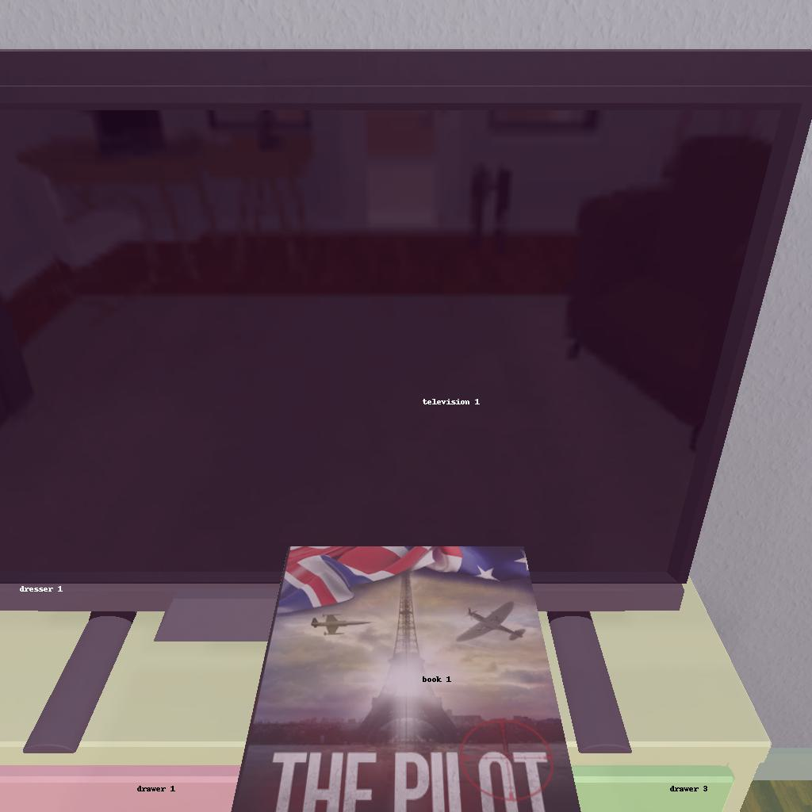
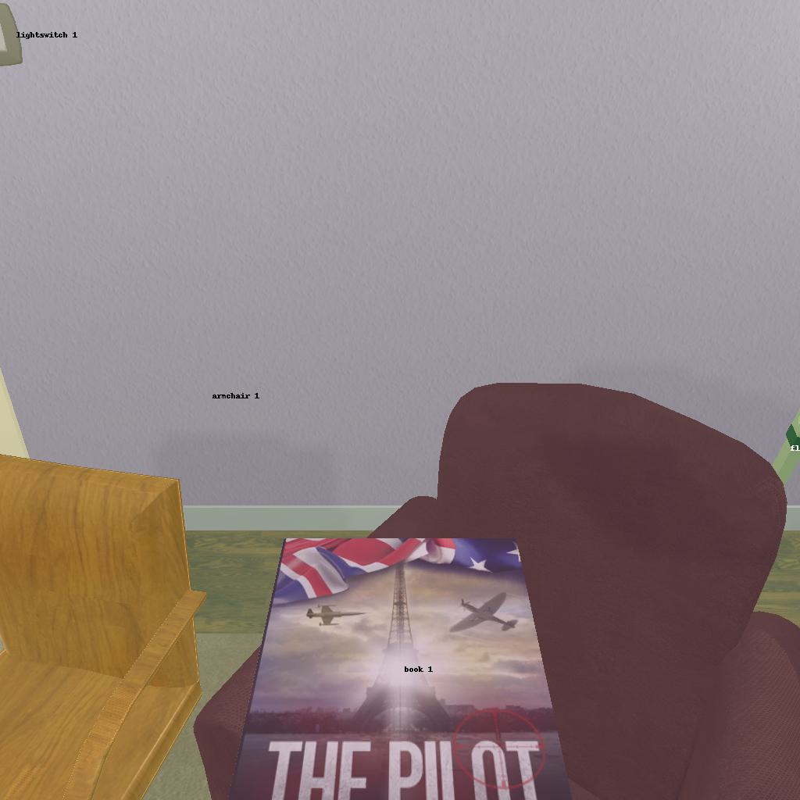

---------------------------------------------------------task: 5---------------------------------------------------------
--------------------------------------------------------------------------------------------------------------------------------------------------------------------
--------------------------------------------------------------------------------------------------------------------------------------------------------------------
Step:--------------------------------------------------------------------------5-------------------------------------------------------------------------------
----------------------------------------
VLM Prompt:
Image1:
Image2:
**Instruction**
1. Analyze the provided image to identify all visible household objects, focusing on those relevant to the task description "put some book on armchair."
2. Use the analysis of the image and the task hint "The agent must find an object of the desired type, pick it up, find the correct location to place it, and put it down there." to answer the question: what is the most reasonable action in the choices for the task description "put some book on armchair"?
4. Decide and write the answer using the template: The answer is: (i): , where i is the real number. If there is no desired object in the image, search every place based on **Initial Observation** to find the object. And if no one is exactly correct, choose a similar answer.
**Initial Observation**
You are in the middle of a room. Looking quickly around you, you can see armchair (1), sofa (1), coffeetable (1), drawer (1-4), sidetable (1-3), dresser (1)
**Answer Choices**
(1): go to sofa 1
(2): go to coffeetable 1
(3): go to drawer 1
(4): go to sidetable 1
(5): go to dresser 1
(6): go to drawer 2
(7): go to drawer 3
(8): go to drawer 4
(9): go to sidetable 2
(10): go to sidetable 3
(11): put book 1 in/on armchair 1
(12): use floorlamp 1
(13): examine armchair 1
**Answer**
Let's think step by step by following the instructions.
----------------------------------------
----------------------------------------
Original Response:
First, we need to identify the objects relevant to the task "put some book on armchair." In Image 1, we can see a book labeled "book 1" on a dresser labeled "dresser 1," and in Image 2, we can see the same book with an armchair labeled "armchair 1" in the background. The task is to put a book on an armchair, and we have identified both the book and the armchair in the images provided.
Next, we need to consider the task hint, which tells us that the agent must find an object of the desired type, pick it up, find the correct location to place it, and put it down there. Since we have already located the book and the armchair, the next logical step is to pick up the book and place it on the armchair.
Given the answer choices, the most reasonable action that aligns with the task description and the identified objects is to put the book on the armchair. Therefore, the answer is:
The answer is: (11): put book 1 in/on armchair 1
----------------------------------------
----------------------------------------
>>> Refine Original VLM Response and Get Pure Action: put book 1 in/on armchair 1
----------------------------------------
-----------------------------------------------------------------
Running time: 13.759678602218628 seconds
Total Money: 2.0688500000000007
-----------------------------------------------------------------
-----------------------------------------------------------------
Text Observation:Nothing happens.
-----------------------------------------------------------------
UNSUCCEED